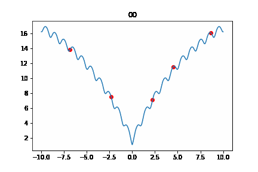

Home
ホームページに来ていただいてありがとうございます
ここには自己紹介と私が行っている研究概要について載せています
追記: ネオポルテ プライバシーポリシーの配色が白文字の白背景で読みにくいです
自己紹介
名前: 武次 豪士 (Taketsugu Goshi)
年齢: 23歳
身分: 大学院生
趣味: ゲーム、 新しい技術を見たり試すこと
Skills
- HTML/CSS (簡単なホームページ作成)
- python
- AviUtl
- 機械学習: 自然言語処理/画像処理/強化学習/遺伝的アルゴリズム
研究概要
現在注目を集めている人工ニューラルネットワークは勾配法を基にした探索でパラメータの学習を行っている
勾配を利用した探索は局所的最適解に陥りやすく大域的最適解にならない場合がある
勾配情報を用いないDifferential Evolution(DE)と呼ばれる最適化アルゴリズムをでパラメータを学習させ、勾配法での学習結果との比較を行う
Differential Evolutionとは
Differential Evolutionは探索エージェントと呼ばれる候補解の集団を反復的に使用し確率的に探索を行う
探索の詳細は次の通りである
- エージェントを一定範囲に設定する
- 任意のエージェントの一つに注目して次の処理を行う
- Mutation(突然変異)
- Crossover(交叉)
- Selection(生存選択)
注目したエージェント以外の3つのエージェントから変異ベクトルを作成する
aで作成された変異ベクトルと注目したエージェントから新しいエージェントを生成する
注目したエージェントと新しく生成したエージェントを評価関数で比較し評価の高いほうを次世代のエージェントとして選択し残す
- 2の処理をすべてのエージェントに行い繰り返す
上記を繰り返すことで評価値の高いエージェントを保存し探索を行う

赤い点がエージェントで縦軸最小値になるように探索している様子
制作物
- このホームページ
- 研究概要に載せている画像(pythonで実験し作成)
- NEUTRINOでずんだもんに歌わせてみた動画を作成 URL:https://drive.google.com/file/d/1cDAkXE4ex-Qtfe7dQVwVUjAaxHNGVdwF/view?usp=sharing
Contact Me
Email: ktaketu@gmail.com